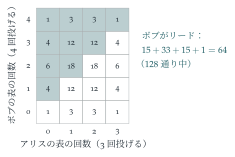

STEP I 2016、第12問
先に進む前に問題を読んでおこう。問題は STEP Support Programme の問題データベースにある： step.maths.org/questions/16-s1-q12
導入
ボブはアリスより1枚多くコインを投げる。ボブの表の回数がアリスより多くなる確率（probability）はいくらか。ボブには有利な点があるが、表が出る保証はなく、引き分けはボブの負けとなる。最初の二つの場合を力ずくで計算すると、答えはどちらも \(\frac12\) になる。これは偶然だろうか。
偶然ではない。ボブは表の回数がアリスより多いか、裏の回数がアリスより多いかのどちらか一方であり、両方が同時に起こることはない。このことに気づけば、一文で済む証明（proof）がある。この問題は、計算がパターンを示唆し、巧妙な対称性（symmetry）がそれを説明するという流れの手本である。
取りかかる前に
アリスが2回投げるとき、表の回数の分布（distribution）はどうなるか。ボブが3回投げるときはどうか。
アリスの表の回数が \(0, 1, 2\) となる確率はそれぞれ \(\frac14, \frac24, \frac14\) であり、ボブの表の回数が \(0, 1, 2, 3\) となる確率はそれぞれ \(\frac18, \frac38, \frac38, \frac18\) である。
順を追って解く
段階 1 力ずくで計算する
小問 (i) では、アリスの表の回数について和をとる。 \[\begin{aligned} \mathrm{P}(B > A) &= \tfrac14\,\mathrm{P}(B \geq 1) + \tfrac24\,\mathrm{P}(B \geq 2) + \tfrac14\,\mathrm{P}(B = 3) \\ &= \tfrac14\cdot\tfrac78 + \tfrac12\cdot\tfrac48 + \tfrac14\cdot\tfrac18 = \frac{7 + 8 + 1}{32} = \frac12. \end{aligned}\] 小問 (ii) は項が増えるだけで同じ計算である。同様に確からしい \(8 \times 16 = 128\) 通りの結果を数えると、ボブがリードするのは \(64\) 通りであり（図 12.6.1）、やはり答えは \(\frac12\) となる。
段階 2 ボブの試行を分ける
ボブの \(n + 1\) 回の試行を、\(n\) 回の試行とそれに続く1回の追加の試行とみなそう。最初の \(n\) 回を終えた時点で、ボブはアリスより多いか、同数か、少ないかのいずれかである。それぞれの場合に何が起こるか。
互いに \(n\) 回ずつ投げた時点で、ボブがリードしている確率を \(p_2\)、同数である確率を \(p_1\) とすると、（アリスとボブの対称性により）ボブが負けている確率も \(p_2\) である。リードしていれば、ボブはそのままリードを保つ。同数であれば、追加の1回で確率 \(\frac12\) でリードする。負けていれば、追加の1回で表が出てもせいぜい同数になるだけである。したがって \[\mathrm{P}(\text{ボブの表が多い}) = p_2 + \tfrac12p_1.\] 三つの場合ですべてを尽くすので \(2p_2 + p_1 = 1\) であり、よって \(p_2 + \frac12p_1 = \frac12\) である。コインが1枚多ければ、どの \(n\) に対しても、ボブの表の回数が多くなる確率はちょうど \(\frac12\) である。■
一文で済む証明を示そう。ボブは \(n + 1\) 回投げるので、表と裏の回数の和は \(n + 1\) であり、アリスより1多い。ボブの表の回数がアリスより多いことと、ボブの裏の回数がアリスより多くないことが同値であることを示せ。表と裏は対称なので、この二つの事象の確率は等しく、したがってそれぞれ \(\frac12\) である。
実際、\(H_A + T_A = n\)、\(H_B + T_B = n + 1\) と書くと、\(H_B > H_A\) ならば \(H_B \geq H_A + 1\) なので \(T_B = n + 1 - H_B \leq n - H_A = T_A\) となる。逆に \(T_B \leq T_A\) ならば \(H_B \geq H_A + 1\) である。よって「表が多い」と「裏が多い」は互いに余事象（complementary event）であり、表と裏を入れ替えると（コインに偏りがないので確率は変わらない）この二つが入れ替わる。

振り返り
小さな場合を計算する。二つの計算から、答えが \(\frac12\) であると予想できた。
自然な分け方で条件付ける。ボブの追加の1回を切り離すことで、問題は互角の勝負とコイン1枚に帰着された。
互いに余事象となる組を見つける。「表が多い」と「裏が多い」は互いに余事象であり、対称性によって入れ替わる。
背後にある数学
対称性と余事象
この鮮やかな証明は二つの事実を組み合わせている。対称性によって入れ替わる二つの事象は確率が等しいこと、そして互いに余事象である二つの事象は確率の和が \(1\) になることである。両方が成り立てば、それぞれの確率は \(\frac12\) である。同じ論法は確率論のいたるところに現れる。飛行機の座席の問題（第 12.5 節）では、\(S_1\) と \(S_n\) が対称性によって入れ替わり、最後にはそのちょうど一方が残るのであった。ヘックス（Hex）というゲームでは、盤面の対称性と、必ずどちらか一方のプレイヤーが勝つという事実から、先手が有利であることが示される。ただし、大きな盤面での必勝法は誰も知らない。
引き分けはどのくらい起こりやすいか
投げる回数が等しい場合には、引き分けの確率 \(p_1\) が重要になる。アリスとボブが引き分けるのはアリスの表の回数とボブの表の回数が等しいときであり、これは（対称性によりボブの表の回数を裏の回数に置き換えると）アリスの表の回数とボブの表の回数の和が \(n\) になる確率、すなわち \(2n\) 回の試行で表が合計 \(n\) 回出る確率に等しい。よって、スターリングの近似（Stirling’s approximation）（第 12.23 節）を用いると \[p_1 = \binom{2n}{n}\frac{1}{4^n} \approx \frac{1}{\sqrt{\pi n}},\] となる。引き分けはまれになっていくが、その減り方はゆっくりである。互いに \(100\) 回ずつ投げても、引き分けの確率はまだ約 \(5.6\%\) ある。
思考のスキル
計算の結果が怪しいほど単純な答えになったら、その理由を探そう。単純な答えには、たいてい単純な説明がある。
大学では、この習慣が「理解すること」と「計算すること」を分ける。ここでの一つ目の証明は答えを確かめるものであり、二つ目の証明は答えを説明するもので、すぐに一般化できる（演習2を試してみよう）。
次の一歩
コインが2枚多い場合。ボブが \(n + 2\) 枚、アリスが \(n\) 枚のコインを投げるとき、\(\mathrm{P}(\text{ボブの表が多い}) = \frac12 + \frac12\mathrm{P}(H' = H_A)\) を証明せよ。ただし \(H'\) はボブの最初の \(n + 1\) 回の試行における表の回数である。
偏りのあるコイン。二人とも表の出る確率が \(p\) のコインを使うとき、1回多く投げる場合の答えはやはり \(\frac12\) だろうか。鮮やかな証明のどの段階が成り立たなくなるか。
引き分け。本文の工夫を用いて \(p_1 = \binom{2n}{n}/4^n\) を示し、\(n = 1, 2, 3\) に対してその値を求めよ。
サイコロ。アリスが \(n\) 個、ボブが \(n + 1\) 個のサイコロを振る。ボブの6の目の個数が多くなる確率は \(\frac12\) に等しいだろうか。
さらに学ぶために
Peter Winkler, Mathematical Mind-Benders（A K Peters）。対称性を用いた解法をもつ確率のパズルが多数収められている。
Gabor Székely, Paradoxes in Probability Theory and Mathematical Statistics（Reidel）。確率論と数理統計学におけるパラドックス集。
Frederick Mosteller, Fifty Challenging Problems in Probability（Dover）。確率の難問50題。